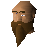
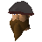

Coal Trucks
Location at 2600, 3491 · Kingdom of Kandarin
Open on the world map → Open in knowledge graph → Below: Coal Trucks (underground)
NPCs
| NPC | Level | Spawns | Notable drops |
|---|---|---|---|
| 44 | 1 | ||
| 27 | 7 | ||
| 10 | 1 | ||
| 5 | 1 | Coins, Water rune, Body rune, Goblin mail | |
| 1 | 6 | ||
| 1 | 2 | ||
| 1 | 3 | ||
 Dwarf Commander | 1 | ||
| 1 | |||
 Stankers | 1 |